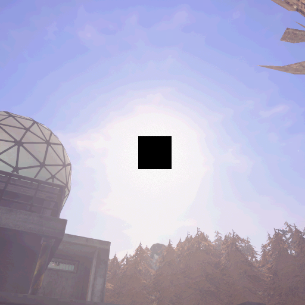
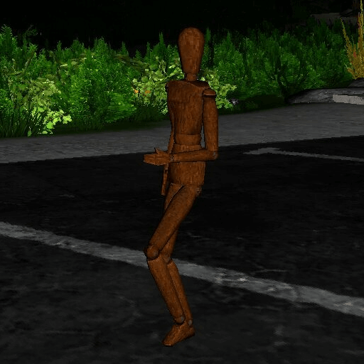
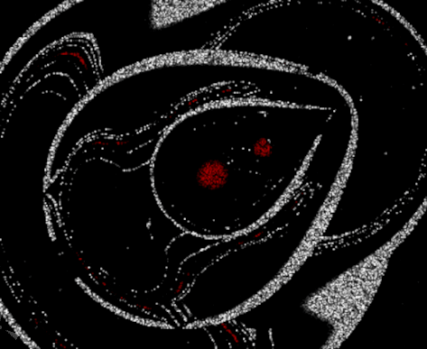
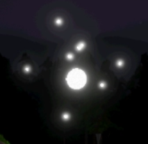

Entities
A small collection of the entities the game offers.
Anomalous Entities
Entities that defy conventional understanding and exhibit strange properties.

Bad Sun
The Bad Sun is an entity that is either a transformed sun, or an entity that has somehow replaced the sun. Its true appearance is hidden to the player, as whatever the sun has become or been replaced by is censored by a large black square. Regardless of its true nature, the light emanating from it actively degrades and breaks down living tissue, separating cells and causing living things to fall into pieces. The unique ending received by dying to the Bad Sun implies that, whatever the entity is, it is dangerous enough to be targeted by an alien faction for immediate destruction. The Bad Sun is directly inspired by the SCP-001 proposal "Daybreak" Platform scp.svg, written by Shaggydredlocks under the pseudonym S. D. Locke.
Spawn Conditions
- Guaranteed spawn on the 24th of the month
- Random chance every new day

Mannequins
A completely normal wooden mannequin. Starting off as posed mannequins on stands, eventually the mannequins will disappear, leaving their stands behind. They then return to stalk the player, moving whenever they aren't looked at. They can be destroyed via hitting them with an object, slamming them against things, or putting them in the woodchipper. Alternatively, they can be set on fire, causing them to endlessly run at the player and attack them until they are destroyed.
Spawn Conditions
- Scattered around the map.
- Purchased from the Shop for 50 points.
Extraterrestrials
Extraterrestrial entities (or aliens) are creatures that do not originate from Earth. Many events in-game involve aliens, and they are some of the most important players in Voices of the Void's developing narrative.

The evil
The Evil is a sentient, alien entity of unknown origin composed entirely of a uniform, strange matter. The Evil's motivation is to convert all matter in the universe into more of itself. It can normally only move slowly through interstellar space, however, it can produce anomalous electromagnetic signals that allow it to travel at light speed towards the recipient of any of these signals. What qualifies as a "recipient" in this context is not clear, nor the means by which it can travel at light speed.
Spawn Conditions
- Process The Evil's signal to Level 3 and fail to delete all traces of it in time.

Thunder wisp
An alien entity comprised of a bright white orb orbited by several smaller white orbs. It slowly wanders around the map in a random path, zapping anything it comes across, including players. When it zaps something, it will create a booming thunderclap. It is also highly radioactive. Like Joel's UFO, it was inspired by Vargskelethor Joel's real-life UFO sighting, and was the result of a misinterpretation of the event. Although commonly referred to as the Thunder Wisp, is is not the same type of entity as the other Wisps.
Spawn Conditions
- Guaranteed during the Super Fog event.